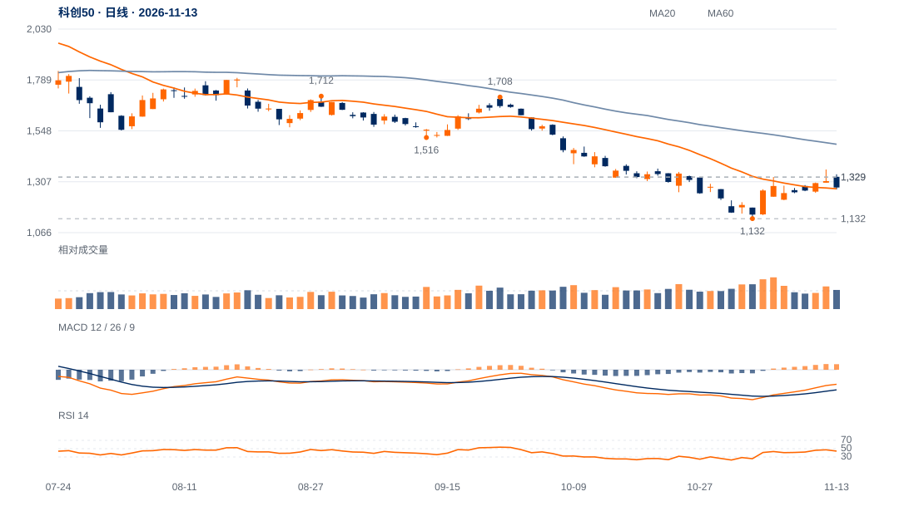

上方努力遭遇明显供应
12日盘中越过1329和1352至1364.88，却收1309.84，上影占振幅88.2%、量比1.24；13日收1279.66、位置13%，买方未能重新接管。
短线相对韧性仍在，但12日上试后的供应得到13日弱收盘跟进。当前先核1253—1274，重新收回1329—1352并保持才能削弱上冲失败解释。

查看大图 ↗先收回1300—1329；原1329两日规则保留，1352—1365保持会明显改善结构。
1230近端减弱、1132结构底线各自保留，不把今日上冲失败外推为旧底已破。
12日盘中越过1329和1352至1364.88，却收1309.84，上影占振幅88.2%、量比1.24；13日收1279.66、位置13%，买方未能重新接管。
本周仍涨2.11%，较10日涨1.16%，且略在20日线上；但近20日相对沪深300比值仍跌2.19%，周线仍受较大下降结构约束。
9月左高至1132.33低点跌33.69%，12日触及1352.11识别参考；此后回落不能抹掉触及，但也不能当成原1329两日收盘确认。当前价差修复仅25.6%。
20日OBV方向余额为正，反弹尾段平均量约为前跌波1.32倍，买方参与并非消失。1253—1274若保持并重新上破1365，当前失败解释将受实质反证。